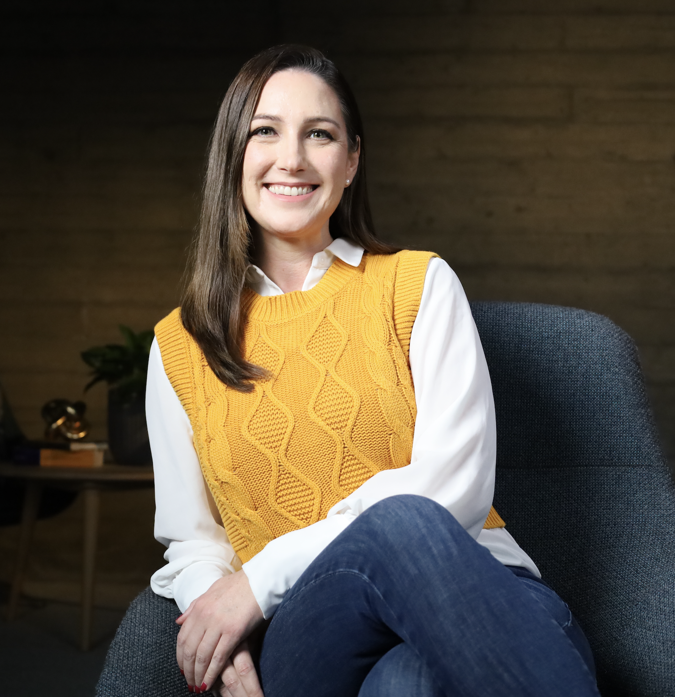
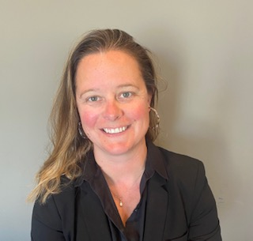
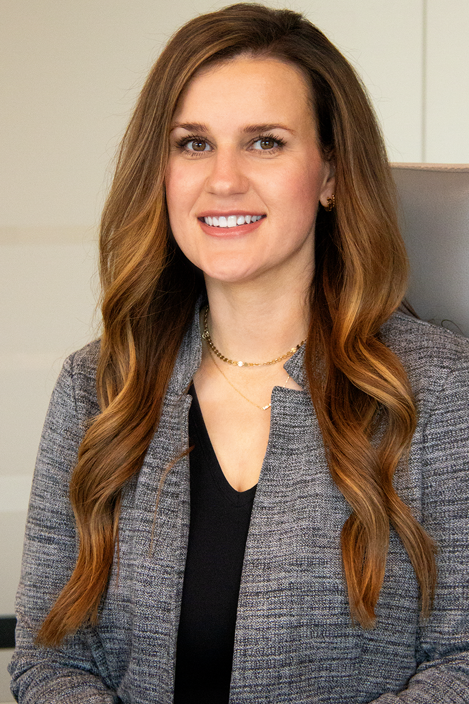
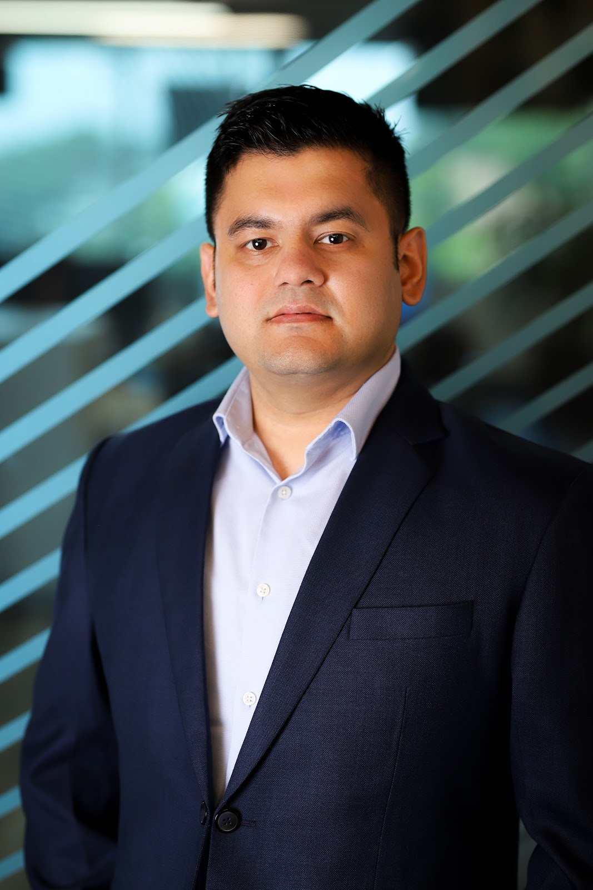
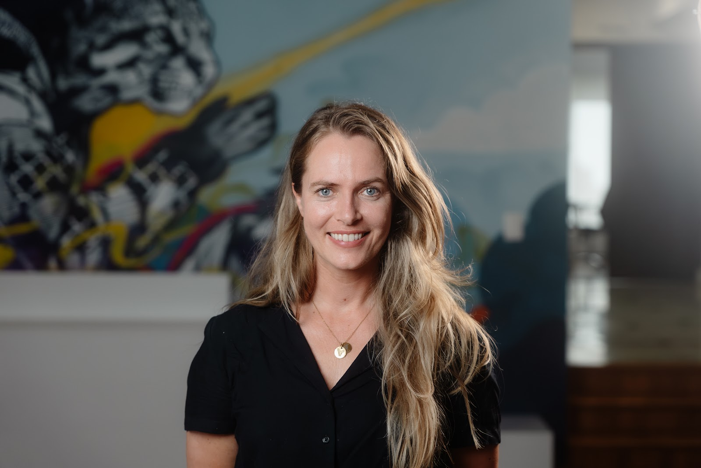
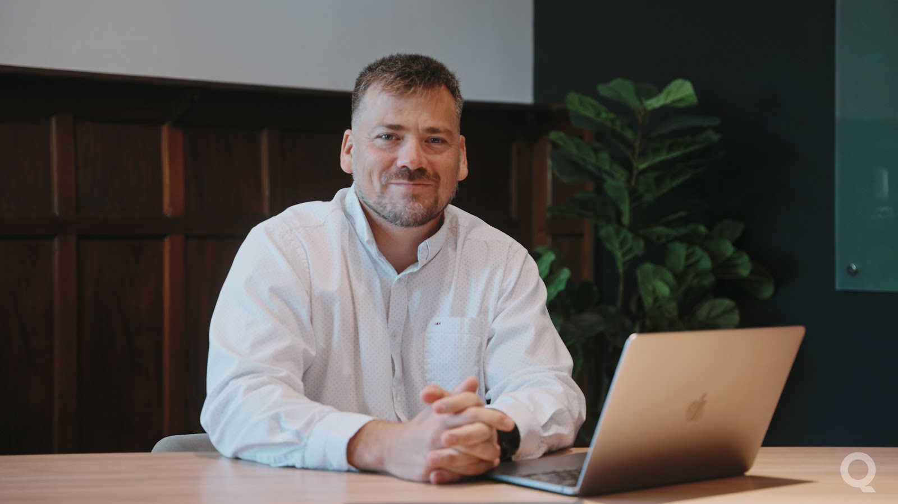
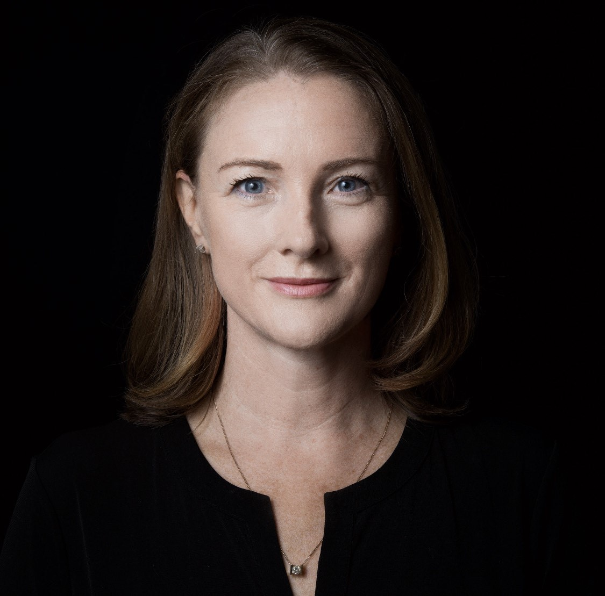
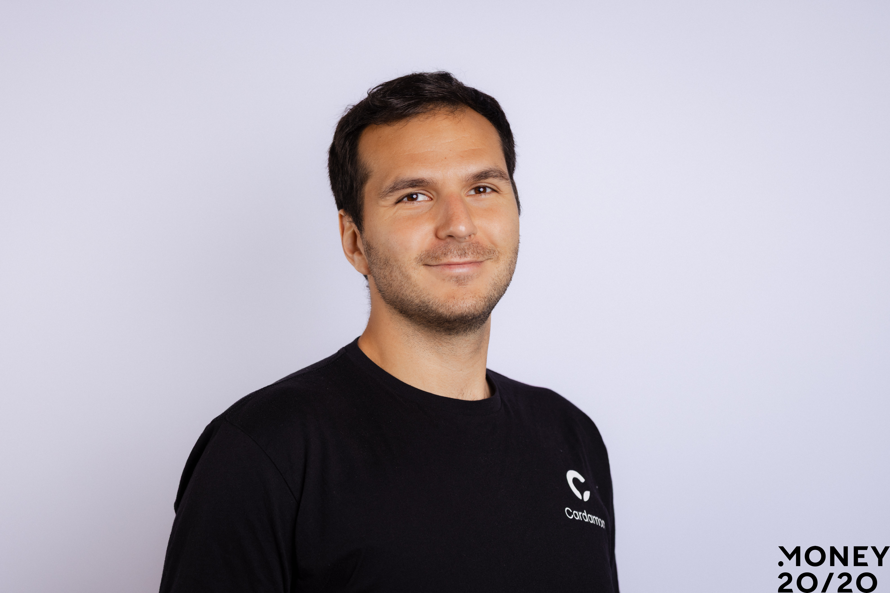
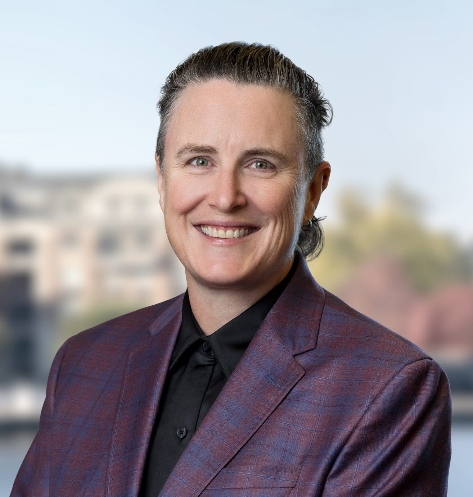
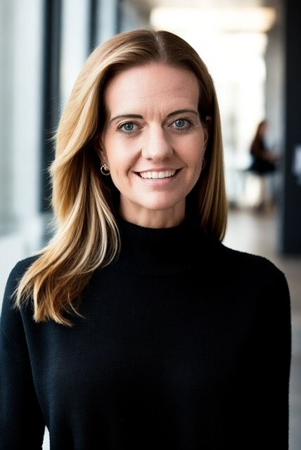

Jonathan V. Gould was sworn in as the 32nd Comptroller of the Currency on July 15,
2025.
The Comptroller of the Currency is the administrator of the federal banking system and
chief officer of the Office of the Comptroller of the Currency (OCC). The OCC
supervises more than 1,000 national banks, federal savings associations, and federal
branches and agencies of foreign banks operating in the United States. The mission of
the OCC is to ensure that national banks and federal savings associations operate in a
safe and sound manner, provide fair access to financial services, treat customers fairly,
and comply with applicable laws and regulations.
The Comptroller also serves as a director of the Federal Deposit Insurance Corporation
and member of the Financial Stability Oversight Council and the Federal Financial
Institutions Examination Council.
Prior to becoming Comptroller of the Currency, Mr. Gould was a partner at the law
firm Jones Day. He previously served as the Senior Deputy Comptroller and Chief
Counsel at the OCC and twice served on the staff of the U.S. Senate Committee on
Banking, Housing, and Urban Affairs, including as its chief counsel. He has spent the
bulk of his career in the private sector as a consultant and lawyer, advising banks and
other financial services firms on regulatory matters and risk management.
Mr. Gould holds a bachelor’s degree from Princeton University and a law degree from
Washington and Lee University.
Raj Date is the Managing Partner of Fenway Summer LLC, a Washington DC-based venture investment firm focused on the financial
services sector. He is also the co-founder of FS Vector, an advisory firm that counsels financial services companies on regulatory strategy,
compliance, and public policy.
Raj was the first-ever Deputy Director of the U.S. Consumer Financial Protection Bureau (CFPB). As the Bureau’s second-ranking official, he
helped steward the CFPB’s strategy, its operations, and its policy agenda. He also served on the senior staff committee of the Financial
Stability Oversight Council, and as a statutory deputy to the FDIC Board. Before being appointed Deputy Director, Raj acted as the interim
leader of the new agency, serving as the Special Advisor to the Secretary of the Treasury. He led the CFPB for most of the first six months
after its launch.
Susan joined Core VC in June 2022 following a 25+ year career in lending, banking and payments across fintech, financial services and retail. She has a proven record of scaling growth and improving profitability through product innovation and digital business transformation at Earnest, Simple, Amazon, Lending Club and H&R Block. She currently serves as a Director and member of the Audit Committee of Finwise Bancorp (FINW) and a Director of Arrived Homes. Ms. Ehrlich has also served on the Board of Directors for the Boeing Employees Credit Union (BECU), and Petal Card, a startup fintech which recently sold to Empower. She was the Board Chair of the Financial Health Network (formerly CFSI) and was a member of the Consumer Advisory Council of the Federal Reserve in Washington. Ms. Ehrlich holds a B. A. with honors from Brown University and an M.B.A. from the Harvard Business School.

With nearly two decades of experience at the intersection of the public and private sectors, Phil Goldfeder currently serves as Chief Executive Officer of the American Fintech Council (AFC), a leading industry association representing responsible financial technology (fintech) companies creating critical access to safe and affordable financial services. AFC, comprised of the nation’s largest fintech companies, fosters innovative, transparent, and responsible products that promote competition, consumer protection, and financial health, inclusion, and equity. AFC is committed to robust industry standards, with a focus on consumer protection and regulatory compliance, in addition to advocating for and embracing appropriate government regulation.
Before joining AFC, Goldfeder served as Senior Vice President of Global Public Affairs at Cross River, a financial institution and technology infrastructure provider that offers embedded financial solutions. In this role, Goldfeder founded the Online Lending Policy Institute (OLPI) and has been a leader in shaping the new financial services landscape since early 2015. At the onset of the COVID-19 pandemic and the passage of the CARES Act in March 2020, Goldfeder helped lead the Cross River team to mobilize internally and offer a streamlined and automated system to provide more than $12 billion in PPP funding to the most vulnerable small businesses in every state, as well as additional short-term relief efforts to communities in the company’s footprint and beyond.
He previously served as an elected member of the New York State Assembly representing diverse neighborhoods of Queens, N.Y. After most of his district was devastated during Superstorm Sandy, Goldfeder lead recovery efforts with a specific focus on partnering with the banking and insurance industry to help rebuild his community and reform outdated policies. He was the author of transformative banking and insurance modernization legislation and was also a key legislative leader on a diverse array of issues. Prior to his election, he served as a senior advisor to Senate Majority Leader Chuck Schumer (D-NY) and New York City Mayor Michael Bloomberg.
Phil’s career in public service and expertise in leadership, crisis management, as well as his ability to enact positive change and develop deep relationships with diverse leaders on both the local and national levels, has put him at the forefront of innovation across banking and technology industries. He is an active industry leader as he engages policy makers and regulators, provides thought-leadership, and is frequently invited to speak on panels, roundtables, and conferences globally on banking, technology, financial literacy, and the new financial services landscape.

As Upstart’s Chief Risk Officer, Annie has built a data-driven, technology-based compliance program with particular focus on understanding and managing regulatory risks associated with the use of non-traditional credit modeling techniques and underwriting variables. Throughout her career in mortgage and consumer lending, she has managed and scaled teams spanning multiple functions including Compliance, Operations, and Software Applications. She has designed and implemented automated solutions to regulatory change such as leading the implementation of the TILA-RESPA Integrated Disclosure Rule during her time at Opes Advisors. Annie has a Bachelor’s Degree from Santa Clara University.
Kareem Saleh is the founder and CEO of FairPlay, the world's first Fairness-as-a-Service company. Financial Institutions use FairPlay’s APIs to embed fairness considerations into their marketing, underwriting, pricing, and collections algorithms as well as to automate their fair lending compliance. Previously Kareem served as Executive Vice President at Zest.ai, where he led business development for the company’s machine learning-powered credit underwriting platform. Prior to Zest.ai, Kareem served as an executive at SoftCard, a mobile payments startup that was acquired by Google. Kareem also served in the Obama Administration, first as Chief of Staff to the State Department’s Special Envoy for Climate Change, where he helped manage the 50-person team that negotiated the Paris Climate Agreement, then as Senior Advisor to the CEO of the Overseas Private Investment Corporation (OPIC) where he helped direct the U.S. Government’s $30B portfolio of emerging market investments with responsibility for transaction teams in Europe, Latin America and the Middle East. Kareem is a Forbes contributor and a frequent speaker on the application of AI to financial services. He is a graduate of Georgetown University Law Center and an honors graduate of the University of Chicago.

Nik spent 10 years leading strategy and partnerships at fintech companies before pivoting to investing. He began as the first hire at Funding Circle, one of the earliest fintechs, which went public in 2018. He joined the early team at Petal to bring their flagship card to market (over 400k users) and raise $264M+ in venture funding. He led partnerships for Google Pay in the US before moving full-time into investing for The Fintech Fund. Alongside his operational experience, he founded This Week in Fintech, a media business with over 200k+ weekly readers, 75k event attendees, and 10k+ online community members.

Ryan Christiansen is Executive Director of the Stena Center for Financial Technology at the University of Utah, overseeing research labs, a venture fund, a startup incubator, and experiential student programs that accelerate fintech innovation and workforce development.
Before academia, Ryan served as Senior Vice President of Data Access Partnerships at Mastercard following the company’s $985 million acquisition of Finicity. As a member of Finicity’s senior leadership team, he helped transform the startup into a market leading data access platform and continued to guide global open banking strategy at Mastercard—negotiating landmark agreements with major financial institutions and advancing tokenized, consumer permissioned data exchange.
Ryan is a founding architect of the Financial Data Exchange (FDX), where he co chairs the Certification Working Group and helps define the international standards that underpin open banking services adopted by more than 100 million consumers. He also co chairs the Utah Governor’s Fintech Council, advising state leaders on policy that fosters responsible innovation.
Prior to joining Finicity, Ryan spent 20+ years as senior executive at national banks, giving him a unique perspective that bridges traditional finance, fintech disruption, and public policy.
Martha O'Malley is an accomplished attorney with broad experience working in fast-paced and highly regulated environments. At Prosper, she serves as senior advisor on legal issues relating to the fintech consumer financial services business. She leads the borrower-side legal team and provides advice to senior leaders and product, business, and operation teams on personal loan, credit card, and home equity products. She also manages litigation related to the operation of Prosper’s consumer platform, and supports the governmental relations efforts, including state and federal public policy issues. Ms. O'Malley represents the company with state and federal regulators, and manages any enforcement actions, inquiries, and investigations.

Ryan Wiggins is VP of Product at Mercury, where he leads the Growth, Analytics, and Core Products teams. He is responsible for building the journey for ambitious companies / people discovering Mercury into using it to scale every day. His work has been central to Mercury’s growth and to developing products and features that customers love. Before joining Mercury, Ryan held product leadership roles at WhatsApp and Facebook, where he built and scaled high-performance teams. He is also an active angel investor, providing financial backing and strategic guidance to early-stage startups.
Peter Renton is the CEO of Renton & Co, LLC, a consulting firm specializing in fintech
media, events and thought leadership. He was formerly the co-founder and
chairman of Fintech Nexus, a fintech media and events company that produced 31
large-scale events worldwide. The events business was sold to Fintech Meetup in
2023 and the media business was sold to COMMAND, a PR firm, in 2024.
Peter has been writing about fintech since 2010, with over 2,500 articles published.
He is the author and creator of the Fintech One-on-One Podcast, the first and
longest-running fintech interview series, recently crossing 500 episodes. Over the
last decade, Peter has conducted over 750 interviews and panel discussions and
produced over 1,800 fintech newsletters.
Kat Zhang is a Partner at Lightspeed Ventures Partners where she partners with early-stage fintech founders building the next-generation financial infrastructure and vertical AI solutions.
Before joining Lightspeed, Kat was an investor at Upfront Ventures, where she spent four years investing in early-stage fintech and vertical AI companies. She began her career at the Federal Reserve Bank of New York, where she led the annual stress tests and analyzed systemic risk across the nation's largest financial institutions, giving her unique insights into both the opportunities and vulnerabilities in the financial system.
Laurel Loomis Rimon is a former federal prosecutor with deep experience in the financial regulatory and enforcement sector. An unrelenting and pragmatic problem solver, Laurel offers clients practical advice when facing compliance or enforcement challenges involving anti-money laundering, consumer protection, federal or state oversight, fintech, and payments. Laurel is also a leading practitioner and thought leader in the emerging blockchain ecosystem. She serves as a Co-Chair of the firm’s Fintech and Crypto Assets Practice.
Consistently recognized as a Chambers-ranked Leading Individual each year since 2022, Laurel’s ""communication style is very direct and she is an excellent writer,"" clients say. And, ""[i]n addition to her deep substantive knowledge, she is able to draw on her extensive government experience to provide nuanced risk assessments and, when necessary, to be a highly credible and effective advocate for us with regulators at both the leadership and staff levels.""
A veteran investigator and trial lawyer, Laurel brings an efficiency in gathering facts and delivering strong responses to government enforcement agencies, correcting the record where necessary, and obtaining favorable resolutions. Through years of front-line experience, she is uniquely positioned to provide clients with a realistic and common-sense approach to regulatory risks and to help them design compliance plans aimed at avoiding and reducing the risk of an enforcement action. Laurel is highly effective at navigating difficult conversations with the government, witnesses, and client teams when necessary.

Kevin is the co-founder and Chief Revenue Officer at Spring Labs. He brings +15 years of leadership experience and success in enterprise sales and business development in the fintech industry. He most recently served as the EVP, Chief Growth Officer at Amount where he helped incubate the vision for the business, drove revenue from zero to +$40MM ARR, and was integral in helping raise $300M in equity capital. Prior to that Kevin was the SVP, Sales and Business Development at Avant, a leading fintech lending platform based in Chicago.
Aaron Kouhoupt offers a unique perspective shaped by 20 years’ experience as both in-house and outside counsel to banks, FinTechs, and various financial institutions of diverse sizes and formats. Aaron applies his extensive grasp of financial services regulation for clients ranging from marketplace lenders and other FinTech companies to community, regional, and national banks, small loan companies, mortgage lenders and servicers, as well as money transmitters and payments processors.
Counseling clients on regulatory compliance matters including consumer loan documentation, e-commerce, underwriting, and advertising, a primary aspect of Aaron’s practice is advising both bank and non-bank participants in bank partnership arrangements. Aaron also advises clients on “traditional banking” issues including those arising under the Bank Secrecy Act (BSA), Fair Debt Collection Practices Act (FDCPA), and Fair Credit Reporting Act (FCRA), as well as matters involving privacy, bankruptcy, and enterprise-wide risk management.
Aaron is used to working with laws that might not yet be in sync with innovative financial products, having served as Head of Legal at an alternative banking and digital payments company and in-house at a peer-to-peer lending and alternative investing company. He also works with European companies to launch U.S. consumer finance products.
A testament to his broad and varied experience, Aaron has published extensively and presented continuing legal education on a wide variety of topics. He has experience as an Adjunct Professor teaching Business Law, Constitutional Law, and American Government at the University of Maine at Presque Isle.
For a detailed list of publications and presentations, see https://www.mcglinchey.com/people/aaron-p-kouhoupt/
Megan "Meg" Nicholls is a partner at Hudson Cook's Fort Worth, Texas office. She advises businesses on compliance with the Fair Credit Reporting Act, the Gramm-Leach Bliley Act and various other consumer financial laws. Meg helps her clients improve their compliance management systems by conducting thorough regulatory assessments and strategizing about practical compliance approaches. She also helps clients respond to security incidents and update information security programs to meet current Safeguards Rule requirements. As a former chief compliance officer for a consumer reporting agency that specialized in helping companies fight fraud, she has a unique grasp of how fraud affects the consumer financial industry and values the opportunity to help her clients address trending fraud and identity theft issues.

Elizabeth O’Connor External BIO
Senior Vice President, Operations | Self Financial Services
A transformative operations executive with over 20 years of leadership experience across the financial services industry, Elizabeth O’Connor is known for driving scalable growth, operational efficiency, and exceptional customer outcomes. As SVP of Operations at Self Financial Services, she leads end-to-end operational functions, including high risk account servicing, customer service, fraud, disputes, operational readiness, and back office operations.
Since joining Self in 2021, Elizabeth has led a broad operational transformation: reducing average handle time by 50%, slashing abandonment rates by 60%, and cutting customer wait times by 20 minutes. Under her leadership, CSAT and NPS have more than doubled, and the team has recovered millions in potential fraud losses. Her influence extends beyond performance metrics: she has scaled operations through automation and efficiency strategies, strengthened KPI accountability, vendor engagement, and built a high-performing, data-driven culture.
Prior to Self, Elizabeth served as Head of Operations Strategic Planning & Analytics at Mercury Financial, where she implemented cost-saving initiatives that saved over $1 million annually. Elizabeth also drove a 45% year-over-year reduction in consumer complaints, while overseeing digital first strategies that helped to launch the company’s first-ever ""Disputes Online"" platform.
Her earlier tenure at Barclaycard US spanned 14 years across multiple global leadership roles. As VP of Fraud Operations, she more than doubled recovery rates, contributing $35 million back to the business. As Product Owner for Dispute Case Management, she successfully implemented global tools that significantly reduced processing time, increased automation, and improved customer outcomes.
Elizabeth brings deep expertise in global operations, risk management, and Six Sigma methodologies. She is passionate about building high-impact teams, optimizing resource models, and executing operational strategies that align cost discipline with customer experience.
Peter leads strategy, growth and product design at Castellum.AI , working closely with clients to achieve risk-aligned coverage for all of their compliance needs. Prior to co-founding Castellum.AI, Peter served at the US Treasury Department in multiple roles, including Senior Policy Advisor advising the President, Treasury Secretary and other principals on sanctions, AML and terrorist financing related to Iran, Lebanon and Israel/Palestine.
Peyman has over 14 years of experience in data science and AI-native product development. He holds three issued patents and has published in leading journals. He co-founded Shelved Inc., an AI-powered recommendation engine for retail, and currently serves as Co-Founder and CPTO of Spring Labs, where he is focused on building AI-native automation solutions for CX and compliance teams at financial institutions. Peyman is a graduate of the University of Notre Dame and the University of California, San Diego.

Carey Ransom is the Managing Director of BankTech Ventures, a strategic investment fund and market intelligence firm focused on transformative solutions to make community banks better. They currently work with over 100 banks in nearly every US state. He's a serial tech entrepreneur and investor who also founded Operate to invest in data-centric software companies. Prior roles include COO at Aspiration, CEO of RealPractice, and CMO at Happy Money. His career also spans product, marketing, and business development leadership roles. Carey is active in SoCal's startup scene and as an angel investor. He also hosts the Operate Podcast to highlight founders, funders and industry luminaries. His belief in purpose, culture, and teamwork stems from growing up in his family’s 100 year-old retail business.
Kalyani is the founder and CEO of Kobalt Labs, a regtech platform strengthening and streamlining regulatory compliance in financial services with AI. Prior to Kobalt, Kalyani was an AI researcher at Stanford, a member of Apple Pay's fraud team working on sanctions screening, and AI lead at Zenysis.
Wade has 25+ years in the banking industry with various roles in marketing, product management, and risk. He's worked both internationally and domestically for banks such as Citigroup, GE Capital, Bank of the West, and WEX. Wade currently resides in Utah and is the Chief Risk Officer for Square Financial Services (Block's Industrial Loan Bank).
Alec Crawford is the Founder and CEO of Artificial Intelligence Risk, Inc (July, 2023). AI Risk, Inc. accelerates Gen AI adoption by providing a platform for AI safety, security, and compliance for financial companies. The company created the first AI governance, risk, compliance and cybersecurity management software platform (AI GRCC), a new category of software going beyond simply “trust and safety”. The company won the Waters Technology #1 Rank for cybersecurity and separately the #1 rank for AI regulatory compliance platform in 2024. Their customers range from small businesses to large financial institutions.
Alec has been working with AI for decades, starting by designing and building neural networks from scratch at Harvard College. Alec is an AI and risk management thought leader, writing a blog and newsletter here, and interviewing high profile guests in AI, cybersecurity, and policy on his top 1% podcast AI Risk-Reward here.
Alec has chaired and spoken at numerous conferences, including Risk USA, the NASCUS annual summit, and numerous other AI, financial, compliance and risk-focused conferences. His background as a research analyst on Wall Street with over 10,000 hours of public speaking makes him an ideal keynote speaker sure to engage any audience.
Previously, Alec was a Partner and Chief Investment Risk Officer at Lord, Abbett & Co. LLC. He was responsible for managing risk in all the firm’s portfolios globally and served as a member of the investment leadership team, the strategic allocation committee. He also led the Advanced Technology Initiative for Investments, which included AI, big data, and unstructured data. He joined Lord Abbett in 2012, was named Partner in 2013, and retired from Lord Abbett in 2022. He is currently a Limited Partner of Lord Abbett. Alec has worked in the financial services industry since 1988, including as Managing Director and Global Head of Risk at Ziff Brothers Investments, as well as senior roles at Goldman Sachs, Deutsche Bank and Morgan Stanley.
Bhanu Arora is a seasoned executive with over 15 years of experience in fintech startups and financial services, specializing in growth and risk management. As Chief Risk Officer at LendKey, he leads credit and fraud risk strategy, servicing and collections, and advanced analytics. He is also spearheading LendKey's push into AI.
Previously, he served as Chief Risk Officer at Avant, where he built a data-driven risk function, pioneered machine learning applications and strengthened underwriting and collections. Earlier, he was VP of Financial Engineering at PIMCO. Bhanu holds an MBA from the University of Chicago Booth School of Business and a B.Tech in Electrical Engineering from IIT Delhi.
Derek Higginbotham focuses on helping banks bring innovative and transformational new financial services products to market and fintechs prepare to meet the demands of regulated, large-scale markets.
Derek joined Klaros from First Electronic Bank in Salt Lake City, where he served as CEO and president; the bank grew from a $40 million bank to $420 million in his four years of leadership, offering dozens of lending products through bank-fintech joint ventures. Prior to that he served as general counsel at an early-stage fintech platform, Applied Data Finance, advising the board of directors and management on legal matters regarding capital markets and financing, strategic partnerships and new initiatives, corporate governance, licensing, contract negotiation, and other regulatory and operational topics. Before that, he held law firm and in-house legal roles in various transactional areas, including structured finance, M&A, and securities.
Derek serves on the board of trustees for Utah Youth Village. He holds a BA and JD from Brigham Young University.
Drawing on over 15 years of experience in the data and analytics space, Josh Suen is a seasoned expert in leveraging data-driven insights to fuel strategic growth in the financial sector. He previously worked in management consulting, where he provided strategic guidance to a diverse portfolio of regional and global banks, as well as fintechs, with a focus on optimizing consumer lending and acquisition strategies.
In 2021, Josh joined KeyBank following the acquisition of AQN Strategies, an analytics-driven consultancy. At KeyBank, he has been instrumental in supporting the Commercial Bank, spearheading advanced analytical use-cases and contributing to the development of the business's overall strategies. With a deep understanding of how to translate complex data into actionable business outcomes, Josh will share valuable perspectives on where banks are finding the biggest efficiency gains today.

Kenzie Mexican is the Deputy Chief Compliance & Risk Officer at FinWise Bank, where she leads enterprise-wide initiatives to ensure regulatory compliance, manage risk exposure, and uphold the bank’s commitment to the best-in-class approach to compliance. With over two decades of experience in financial services, she specializes in building robust compliance frameworks, fostering a culture of compliance, and navigating complex regulatory environments.
Prior to joining FinWise, she held VP roles in Compliance and Financial Crimes at Zions Bancorporation and Interbank FX. Kenzie is a Certified Regulatory Compliance Manager (CRCM), Certified Anti-Money Laundering Specialists (CAMS), as well as a Certified Fraud Examiner (CFE).
Madeline Fredin is VP of Partnership Strategy at Alloy Labs, where she helps banks create differentiating advantage through collaboration and innovation. Her work spans emerging technologies like AI and digital identity, where she guides members in translating market shifts into actionable strategies and partnerships. Prior to Alloy Labs, Madeline led strategy for Crowe LLP’s financial services consulting practice, with deep expertise in design thinking and new product development. She began her career designing software for credit and commercial lenders.
Marc Rasich focuses his practice on assisting technology companies, from Silicon Slopes start-ups to global Fortune 100 companies, with their trade secret, trademark, copyright, patent and related business torts disputes. He regularly represents software, nutraceutical and manufacturing companies as plaintiffs and defendants in courts and arbitration tribunals throughout the United States. He has successfully argued cases before the Ninth, Tenth and Federal Circuit Court of Appeals.
Marc’s litigation record exemplifies his practical and strategic approach to resolving disputes. Whenever possible, he seeks to resolve claims through summary judgment and other dispositive motions, with the goal of helping his clients avoid the expense, and uncertainty of trial.
Marc also relies on his deep business litigation experience to help high growth companies identify, protect, and grow their intellectual property and proactively identify and mitigate legal risk. His proactive approach allows businesses to identify and address legal issues more effectively across business operations and alleviate unnecessary litigation costs.
Matt is the CEO & CTO of Bridgeforce Data Solutions. He has spent his career at the intersection of business and technology, starting in the 1990s by helping to lead the early use of digital channels for new account generation. After founding and later selling his first software company, Matt joined Bridgeforce Consulting in 2004 and later Bridgeforce Data Solutions in 2020.
His career has focused on the power of combining data, strategy, and decision processes to improve customer experience, financial results, and regulatory risk. In his current role, Matt has driven the development of AI solutions focused upon credit data furnishing and disputes and speaks regularly on the intersection of AI and compliance risk at industry events.
Tomás Campos is the co-founder and CEO of Spinwheel, the leading consumer debt API helping millions of Americans see, understand, and take action on their debt -- directly from the apps and services they already use. A seasoned entrepreneur, executive, and inventor, Tomás has spent two decades shaping the future of payments, retail, consumer, and SaaS businesses.
Before Spinwheel, he sold his previous company to Westfield Inc., where he went on to serve as SVP of Product, driving digital innovation across one of the world’s largest retail portfolios. Earlier in his career, he scaled Blackhawk Network’s digital payments division into a $1.5 billion business and independent reporting segment, leading as Global General Manager.
With a track record of transforming industries and building at scale, Tomás brings a unique perspective on how technology can dismantle barriers, re-architect consumer credit, and create more inclusive financial ecosystems.
Vishal Kapoor serves as Affirm’s SVP, Product where he is responsible for product management, product design, user experience, and product marketing management. Since joining Affirm in 2020, Vishal has led several key initiatives, including scaling the Affirm Card and deepening partnerships with key merchants to accelerate growth. Prior to Affirm, Vishal held a product leadership role at Dropbox, where he ran all platforms, including Global Payments, and stood up their Seattle office as part of the landing team. Before that, he worked across the Windows, Xbox, and Azure teams at Microsoft. Throughout his career, Vishal has been committed to customer centricity and a high quality standard for products, which he instills across his teams.
Vishal received a B.S. in Engineering from Delhi University and an M.S. in Computer Science from Columbia University.
Jay Budzik is Senior Vice President, Director, AI/ML Model Development and Operations at Fifth Third Bank. Prior to Fifth Third, Jay was CTO at Zest AI, where he led the data science, engineering and product management teams that pioneered the use of AI in consumer loan underwriting, serving clients such as Freddie Mac, Citibank, Truist, Discover, and over 100 regional banks and credit unions. Jay led the development of the first AI de-biasing methods used in lending. These and other methods yield significant increases in equity for protected groups that have been needlessly held back by traditional credit scores. Prior to Zest AI, Jay founded several successful AI companies. Jay holds over 40 patents in applied AI, earned a Ph. D. in Computer Science from Northwestern University, and holds a B. S. in Computer Science with honors from The University of Chicago.

Pravesh Rijal is the Chief Data & AI Officer at Cross River, where he leads the bank’s enterprise-wide strategy across data platforms, artificial intelligence, and quantitative research. As Cross River’s Chief Data & AI Officer, he is responsible for the intelligence infrastructure powering investment, risk, and decision-making across the business.
Prior to this role, Pravesh led Cross River’s Quantitative Strategies organization, delivering high-impact modeling and analytics capabilities. Earlier in his career, he served as Senior Vice President in Citigroup’s Global Modeling function and has led key modeling organizations across other Wall Street firms. With deep expertise in financial engineering and applied AI, Pravesh holds a Master’s in Financial Engineering from New York University (NYU) and is currently pursuing a PhD in Finance at EDHEC Business School, France.
He is passionate about building globally competitive intelligence systems that combine data, human judgment, and machine learning — responsibly and at scale. He speaks regularly on quant innovation, and the future of decision-making in finance.
Margaret joined Zions Bancorporation in October, 2023 as the Chief Technology Officer where she is responsible for all information technology functions for the Technology Organization, including application engineering, technology operations, technology strategy, data engineering, and technology infrastructure.
Margaret has spent over 25 years in the financial industry at Capital One and more recently at Discover Financial Services where she served as Vice President and CTO for the Consumer Banking Technology teams.
An advocate for technology education, Margaret served as an advisory board member of the computer science department at Virginia Commonwealth University and is the past board chair and current board member of CodeVA, a non-profit that partners with schools, parents, and communities to bring equitable computer science education to students across Virginia.
Margaret holds a bachelor’s degree in engineering from Cornell University and a Ph.D. in industrial engineering from Lehigh University.
In her downtime, Margaret delights in trying new recipes, enjoying the outdoors, and traveling. In fact, she went to Australia and New Zealand for the 2023 Women’s World Cup Finals!
Kim Gerhardt is the Owner and Principal Advisor at The FinTech Interactive, where she advises early-stage fintechs at the forefront of applying AI to transform financial access. Her current clients are building in cash-flow-based credit underwriting, global KYC/KYB infrastructure, AI governance and fairness, and alternative data for decisioning. With a strong lens on risk and compliance, Kim helps institutions innovate responsibly while expanding access for underserved consumers and small businesses. She is passionate about ensuring breakthrough technologies are aligned with responsible practices so that AI not only drives innovation, but improves lives and strengthens communities.
Andi is the co-founder and CTO of Veris AI, an infrastructure company developing simulation environments for the continuous testing and training of AI agents in enterprise settings. Prior to founding Veris, he served as a Generative AI Solution Architect at Google, where for three years he advised enterprises on the design and deployment of large language model applications. A repeat founder, Andi holds a PhD in Computer Science from the University of Melbourne.

Elisabeth Bohlmann is Managing Director at Qubika, where she helps banks, payments providers, and fintechs deliver production-grade data and AI, from real-time fraud detection and risk modeling to KYC/KYB onboarding and embedded-finance experiences built on modern data stacks (Databricks, Snowflake, AWS).
A frequent industry voice, Elisabeth spoke at CrossTech Fintech Payments 2024 on scaling fintechs and the AI payments convergence, has presented at ViVE Tech Talks, and previously delivered a HIMSS session on UX-centric healthcare software, bringing a pragmatic lens on regulated, data-intensive product delivery.
With 15+ years leading cross-functional teams across sales, operations, growth, and client strategy, she has partnered with organizations including ACI Worldwide, IDB, AMD, and Pluralsight, as well as global media brands such as Mattel, NBCUniversal, Sony Music, and Univision—experience she now applies to financial-services transformation. She holds an Economics degree from Bonn University with a multicultural background spanning Germany, the Netherlands, South America, and the U.S.

Andreas Fast is the Director of Finance Solutions at Qubika, where he creates strategies for top financial institutions, including Experian, Verifone, Santander, and Ripple, who collectively serve over 100 million customers yearly.
He leads Qubika’s Finance Studio, specializing in scalable, data-driven, and AI-powered financial services. Andreas oversees projects ranging from core banking and payment systems to advanced security and fraud prevention. Under Andreas’ leadership, his team has developed Qubika Accelerators and AI Agents to drive innovation and financial service performance.
Mehdi Jamei is an applied AI researcher and the co-founder and CEO of Veris AI—the modern infrastructure for training enterprise-grade AI agents.
He holds a PhD in Electrical Engineering and Computer Science and an M.S. in Physics, both from University of California Berkeley. In the past, among other things, he served as Director of AI at System.com.
Rhim Shah is the Co-Founder and CEO of Arva AI, backed by Google and Y Combinator. Arva’s AI Agents are used by large banks and fintechs to make financial crime compliance more efficient. Before Arva, he led the financial crime product team at Revolut Business, and holds a Master’s in Machine Learning from the University of Oxford.

Jane Barratt is Chief Advocacy Officer and Head of Global Public Policy at MX. Jane is a personal finance expert and champion of financial strength. In her role, Jane collaborates with financial institutions, regulatory bodies, policymakers and the financial ecosystem to ensure people have better financial outcomes through permissioned and secure data-driven innovation.
She is also the Co-Chair of the Financial Data Exchange (FDX), and is a financial educator through LinkedIn Learning. Prior to MX, Jane was CEO of GoldBean, an education first investment advisory platform; and spent two decades driving growth for Fortune 500 companies.
Abby Sleight, Director of Data & AI at Lendio, unites deep analytic expertise with strategic product vision to power AI-first lending solutions that serve small business financing needs. She led the build-out of Lendio’s machine learning and risk modeling infrastructure, shaping the platform’s decision engine used by thousands of small businesses. With over a decade of experience in financial services and technology, Abby brings proficiency in predictive modeling, data-driven governance, and model validation to Lendio’s product practice. Abby holds a Master’s in Information Systems and a Bachelor’s in Linguistics from the University of Utah. Her interdisciplinary perspective fuels practical innovation in AI, enabling Lendio to scale elegant technology solutions that serve the full ecosystem of small business capital access.
Trent Miskin, co-founder and Chief Product Officer of Lendio, is the visionary product leader behind the AI-driven platform powering the nation’s most robust small-business lending marketplace. Since starting the company with CEO Brock Blake over a decade ago, Trent has focused his deep technical acumen, strategic product perspective, and relentless problem-solving drive on making capital more accessible to U.S. small business owners. Building on the success of the company’s loan marketplace, he’s translated complex business lending challenges into elegant, scalable SaaS and AI-driven solutions.
Saurabh Bajaj is a veteran product and business leader with over two decades of experience building AI-powered risk platforms that protect some of the world’s most complex financial ecosystems. He is the Chief Product Officer at Oscilar, where he drives product strategy for the company’s next-generation AI Risk Decisioning™ platform, unifying fraud detection, credit decisioning, and AML compliance to rebuild trust in digital finance for the GenAI era.
Saurabh has a proven track record of scaling risk technology companies from early stage to global impact and successful exits. As Chief Product Officer at Feedzai, he helped transform the company into a leading AI risk platform serving enterprises worldwide. At Shape Security, he served as General Manager and post-acquisition CEO, leading its growth strategy through to a $1 billion acquisition by F5 Networks. He has also held leadership roles at Neustar, later acquired by TransUnion.
Throughout his career, Saurabh has worked with leading banks, fintechs, merchants, and regulators to modernize fraud prevention, credit decisioning, and compliance using cutting-edge AI. From stopping sophisticated fraud to enabling real-time credit and AML strategies, his work has consistently helped institutions stay ahead of emerging threats while maintaining seamless customer experiences.
A builder and operator at heart, Saurabh is passionate about solving complex problems with urgency, curiosity, and clarity. He brings a global perspective, having grown up in Mumbai, India, and remains committed to making digital finance safer and more accessible worldwide.
Kunal Datta is the Head of Product at Unit21. Prior to Unit21, he led the Product team for Checkout at Fast, and prior to that led the Product teams responsible for automating aerial wildfire safety inspections at Pacific Gas & Electric.
He has a background leading Product teams using AI to automate processes at regulated entities, as well as financial products, machine learning products, web applications, mobile applications, hardware products, and data products.
Kunal is a Fulbright Scholar and studied Civil and Environmental Engineering, and Music Science Technology at Stanford University.
Jorden Hunter is a complaints and customer trust expert with deep experience in fintech and financial services. He leads the complaint management program at Mercury Technologies, where he built and scaled the company’s regulatory framework, working with banking partners to ensure compliance while transforming complaint insights into initiatives that strengthen trust and improve the customer experience.
In previous roles at Discover and Varo Bank, Jorden expanded and led complaint intelligence and advocacy teams, implementing data-driven reporting and providing executives with insights that turned customer voice into actionable strategy.
Robert Marx is Vice President of Compliance at WebBank, where he leads regulatory programs and partner onboarding and has spearheaded the adoption of generative AI to streamline oversight, marketing reviews, and complaint handling. With 30+ years across banking and fintech—including roles at UBS Bank USA, American Express, and Wells Fargo—he has built and refined compliance programs through periods of rapid growth and regulatory change. Robert chairs the ABA Compliance Schools Advisory Board and holds CRCM and CIA designations; he frequently speaks on compliance, AI, and operational excellence.
Mr. Headlee was appointed President and Chief Executive Officer of the Utah Bankers Association, April 1997. The Utah Bankers Association is a trade association serving the banking industry in the state of Utah, the 5th largest banking state in the U. S. Its membership consists of state and nationally chartered banks, savings banks and FDIC insured industrial banks. Mr. Headlee has been recognized as one of Utah’s 100 most influential people.
As leader of the UBA, Mr. Headlee has launched several national initiatives to serve the banking industry including the industry’s first “Super PAC” Friends of Traditional Banking.
Mr. Headlee was elected by his peers to serve as Chairman of the National Alliance of Bankers Associations and served in that role during the COVID pandemic where he helped direct the banking industry’s response to the pandemic, including the roll out of the Paycheck Protection Program (PPP.)
In addition to his passion for the role banks play in every American’s pursuit of happiness, Mr. Headlee has dedicated much of his life to public education. He founded one of the largest charter public schools in Utah and in 2012, he was appointed by Utah Governor Gary Herbert to serve on the Utah State Charter School Board where he served as Chairman until he retired in 2016. He now serves on the advisory board for the Center for the School of the Future.
Mr. Headlee also served as Chairman and founder of Utah Center for Neighborhood Stabilization. He has also served as Chairman of the Legislative Policy Committee for the Utah Partnership for Education and Economic Development and Chairman of Artistic Resource for Teachers and Students (A.R.T.S. Inc.) a non-profit organization committed to maintaining the influence of the fine arts in Utah’s elementary schools.
Mr. Headlee received his Bachelor of Science from the Brigham Young University School of Accountancy and earned a Master of Business Administration from the University of Utah. Howard is a member of the Tabernacle Choir on Temple Square and he and his wife Tana, have six children and live in Sandy, Utah.

Dr. Boyd is the Director of the Office of Artificial Intelligence for the State of Utah, where he leads out on developing AI regulatory policy and clearing paths for novel business applications of AI. He is on long-term leave from his role as a professor at BYU where he teaches applied and computational mathematics. Dr. Boyd’s research lab focuses on artificial intelligence, machine learning, and mathematical modeling in social science applications, such as psychology, economics, and social networks. Before working at BYU, Dr. Boyd was a postdoctoral research associate at the University of North Carolina at Chapel Hill, an NDSEG Fellow at UCLA, a research associate at Los Alamos National Laboratory, and a Presidential Scholar at BYU.
Ray Baxter is currently a Director in Consulting at Forvis Mazars. He has 20 years of experience providing IT and cybersecurity operations, auditing, and consulting services to companies. He previously led a security department as the interim Chief Information Security Officer. Ray specializes in driving transformational outcomes by optimizing people, processes, and emerging technologies, and he is skilled in navigating complex regulatory environments. Additionally, he co-leads the Forvis Mazars AI team, which develops AI governance and risk strategies for clients and helps them understand the impact of AI on their operations.
As Head of Product at Castellum.AI, I lead product strategy for a cutting-edge financial crime compliance platform that integrates proprietary risk intelligence, comprehensive AML/KYC screening capabilities, and advanced AI agents.
Drawing from over a decade of product management expertise across diverse industries, I have shepherded innovative solutions from conception to market launch, guided emerging products toward product-market fit through strategic experimentation, and positioned established offerings for competitive advantage in mature markets. My experience spans the full product lifecycle—from identifying white-space opportunities and executing strategic pivots to scaling successful product lines that drive organizational growth.
Bryan Hanks is a registered patent attorney focused on the strategic development and enforcement of domestic and worldwide patent portfolios. He is go-to counsel for pilot programs, strategic advice, and some of the most difficult legal and technical projects for enterprises ranging from startups to the largest corporations in the world. Known for thinking outside the box, Bryan is a recommended professional who can “take on any high technology brief” and “whip any large portfolio into shape.” Intellectual Asset Management (2021 and 2022 “IAM 1000” Editions).
Bryan guides clients through many areas of patent law, procurement, licensing, patentability searches, freedom-to-operate opinions, and IP due diligence. Bryan’s experience involves a wide range of technologies, including audio systems, artificial intelligence, machine learning algorithms, digital signal processing devices, computer software applications, virtual and augmented reality systems, semiconductor devices, and network devices.
Bryan has direct experience in engineering having worked at Hewlett Packard’s VLSI lab, where he developed regression testing processes for VLSI design tools, and NASA’s Johnson Space Center, where he programmed and maintained databases for International Space Station payloads. With a background in both programming and chip design and a fascination with automation, Bryan has focused on procuring patent protection for both the hardware accelerators and the software algorithms that power artificial intelligence.

As a partner in the Hanover, MD Office, Cathy counsels financial services companies on state and federal consumer and commercial financial services law. She represents cutting-edge fintech companies, banks using fintech services, and leading investors in fintech and applies her knowledge of federal and state regulations to their innovative business models. Cathy provides clients with an analysis of state licensing requirements applicable to originating, brokering, marketing, purchasing, and servicing consumer and commercial assets, strategic partnerships between depository institutions and technology companies, and alternative lending and mobile and online payment platforms. Cathy advises traditional financial institutions on mitigating risk and leveraging partnerships with innovative technology service providers in compliance with evolving state and federal regulations.
Cathy is a frequent presenter for the ABA Business Law Section, Alternative Finance Bar Association, deBanked and Lend360. She writes articles and comments regularly for national publications in fintech, small business lending, bank partnerships, and other consumer finance compliance topics. Cathy is ranked in Chambers FinTech Guide 2022 for FinTech Legal: Payments & Lending - USA and in The Best Lawyers in America©2022 for Financial Services Regulation Law.
Cathy received her law degree in 1995 from the University at Buffalo School of Law and her Bachelor of Arts degree in English and Psychology from Fordham University in 1992.
25+ years in financial services technology expertise across compliance, risk management, personalization, and developing AI-native platforms. Currently lead the go-to-market function for an agentic AI platform redefining relationship banking—driving positioning, messaging, sales strategy and customer success to deliver market entry and expansion.
Tim supports financial services and fintech clients, leveraging his firsthand experience with the licensing procedures in virtually every state, along with extensive knowledge of state regulators, requirements, and industry participants.
Prior to joining FS Vector, Tim was part of the founding Approved team, and before that, spent nine years working at the Conference of State Bank Supervisors as its senior director of policy, where he focused his efforts on policy and system development for state regulatory agencies. While at CSBS, Tim led external stakeholder engagement for NMLS 2.0, an overhaul designed to make NMLS more intuitive and efficient for industry users and regulators. He also managed and worked on the SAFE Act implementation in NMLS, the expanded use of NMLS for money transmitter, debt collector, consumer lender, and other non-mortgage licenses, as well as the development of the first nationwide electronic surety-bond platform. In addition, he worked nationally with state regulators and industry participants to facilitate corporate transactions, including mergers and acquisitions.
Tim holds an M.P.A. from Syracuse University

Karin Lockovitch is a Partner and Head of Oliver Wyman's Retail Banking and Consumer Compliance practice with 25 years of banking and financial services risk and compliance experience. She previously served as Chief Risk Officer at loanDepot and Chief Compliance Officer at Bank of the West, Zions Bancorporation, and SunTrust (now Truist).
Karin specializes in enterprise risk and compliance program design for banks, fintechs, and emerging financial institutions. She has extensive experience with U.S. regulatory agencies, leading major regulatory implementations and enforcement action remediations. She regularly provides thought leadership on banking compliance topics and has served on committees for major banking associations. Karin holds an MBA from the University of Utah and is a Certified Regulatory Compliance Manager (CRCM).
Shaun serves as the principal for the Financial Services Practice out of the Little Rock office. His expertise is within the regulatory compliance area and focuses on community financial institutions. He has 19 years of consulting experience and has worked with more than 100 banks with their compliance and Bank Secrecy Act (BSA) programs and is a featured speaker at many events.
He currently holds the Certified Regulatory Compliance Manager (CRCM), Certified Community Bank Compliance Officer (CCBCO), and Certified BSA/AML Professional (CBAP) certifications. Arkansas Business named him one of “40 under 40” in 2014.
Shaun is a 2001 graduate of Arkansas State University, with an M.B.A. degree, and a 2007 summa cum laude graduate of Barret School of Banking, Memphis, Tennessee.
Gov. Spencer J. Cox is a husband, father, farmer, recovering attorney, and Utah’s 18th governor. He also served as the 2023-2024 chairman of the National Governors Association.
Gov. Cox has a long track record of public service, serving as a city councilmember, mayor, county commissioner and state legislator before being appointed as Utah’s lieutenant governor in 2013. He was sworn in as governor on Jan. 4, 2021.
During his first term in office, Gov. Cox cut $1.1 billion in taxes, implemented landmark changes in water law, water conservation and infrastructure planning, locked in record funding for education and teachers, enacted universal school choice and secured funds for affordable housing. A long-time advocate for suicide prevention and mental health resources, he’s become a national voice on protecting youth from the harms of social media. He also signed early education and workforce program funding, launched the One Utah Health Collaborative, and expanded opportunities for women, diverse communities and those living in rural parts of the state.
With a focus on solutions, Gov. Cox promotes respect in politics and innovation in government, works across party lines to find common ground and regularly participates in hands-on service projects. These elements were the foundation of his NGA Chair’s Initiative, “Disagree Better: Healthy Conflict for Better Policy.”
A sixth-generation Utahn, Gov. Cox was born and raised in Fairview, a town of 1,200 in the center of the state. He met First Lady Abby Palmer Cox at age 16 and they married after he returned from serving a two-year mission for The Church of Jesus Christ of Latter-day Saints in Mexico. He attended Snow College, Utah State University and the Washington and Lee University School of Law, then clerked for U.S. District Judge Ted Stewart and worked at a Salt Lake City law firm. Several years later, Gov. Cox and First Lady Cox moved back to Fairview to raise their four children – Gavin, Kaleb, Adam, and Emma Kate – on the family farm. The governor, first lady and Emma Kate currently reside in the Kearns Mansion, also known as the Governor’s Mansion, in Salt Lake City.
Conor Gleeson is the GM of Enterprise at Castellum.AI, working globally with clients to solve for KYC/AML, and global risk data screening concerns using AI. Conor brings 10+ years of FinTech experience from BlackRock, Carta, and various other VC-backed startups. He lives in San Francisco with his wife, daughter. Talk to him about music!
Jerry Chou serves as Chief Compliance Officer at CashRepublic Holdings, guiding compliance and risk strategies across lending and banking initiatives. Drawing on more than 20 years of experience in fintech and financial services, he is advancing the use of AI and RegTech to strengthen and modernize core pillars of the Compliance Management System.